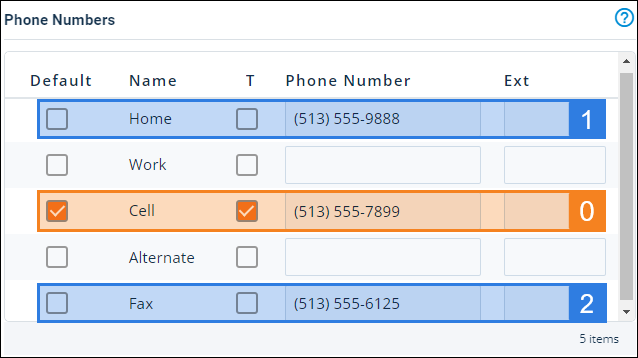
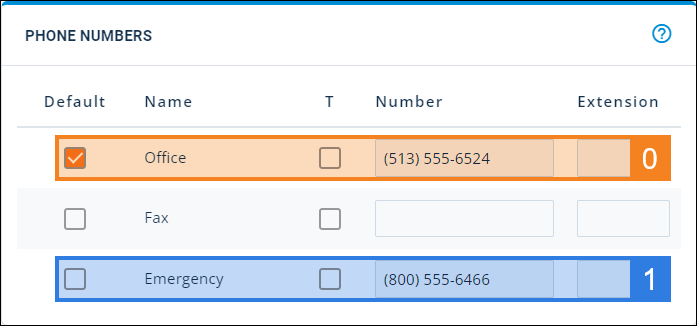

Source: https://rmxhelp.rentmanager.com/Topics/Express/KB/Script-Index-Phone-Number.htm
Phone Number Indexing
In scripting, an index is how instances of an entity or other record are counted in a script. Indexing manages the one-to-many relationship that occurs between two classes.
The PhoneNumber class is used as a child class in a script (e.g., [Tenant().Contact().PhoneNumber().Function]), and an index can be specified to uniquely identify the phone numbers that are associated with the preceding class. For example, tenant contacts may have multiple phone numbers associated with their account, and indexing can be used to identify each of those phone numbers.
The phone number checked as Default has an index of 0. Following that default phone number, Rent Manager examines phone numbers with entries from top to bottom. Entering an additional phone number or marking another number as Default reorders the index.
Phone Number Index Relationships
The PhoneNumber class may use an index parameter when it is preceded by certain classes. Each class is described below.
Contact.PhoneNumber Indexing
Phone numbers are associated with each contact on an account. Tenant, prospect, and vendor phone numbers are listed on the View Contacts pop-up of the account. Owner phone numbers are listed on the Phone Numbers tile.

[Tenant().Contact().PhoneNumber(2).FullNumber]
Using the information in the above image, this returns (513)555-6125, the second phone number not marked as Default from the top.
Property.PhoneNumber Indexing
Property phone numbers are listed on the details page in the Phone Numbers tile.

[Property().PhoneNumber(0).FullNumber]
Using the information in the above image, this returns (513)555-6524, the default phone number of the property.